Принципы построения систем телемеханики
Аппаратура телемеханики. Функциональные блоки и узлы систем телемеханики
В настоящее время основной способ технической реализации телемеханических систем – это использование программируемых логических контроллеров (ПЛК). При использовании ПЛК необходимо составить и отладить модель работы разрабатываемого устройства. В свою очередь, модель каждого элемента системы разрабатывается на основе его функциональной схемы. Рассмотрим принципы и примеры построения функциональных блоков, используемых в системах телемеханики.
Коммутатор, или распределитель – это устройство с одним входом и многими выходами. На вход коммутатора подаются тактовые импульсы переключения, выходной сигнал логической единицы последовательно появляется на одном выходе, начиная с первого и заканчивая последним.
Однотактный распределитель на четырёх D-триггерах. Схема такого распределителя приведена на рис. 1, а(число триггеров может быть любым).
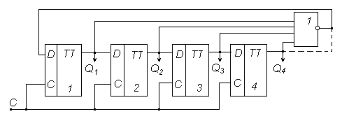
Рисунок 1 - Схема однотактного распределителя
Выход предыдущего триггера соединён с входом D следующего триггера. Выход последнего триггера может быть соединён с входом первого, минуя элемент ИЛИ – НЕ (пунктир на рисунке). Распределитель будет работать и в этом случае. Однако если по каким-либо причинам одновременно начнут переключаться два триггера или более (случай, возможный при большом числе триггеров), т.е. начнут циркулировать две единицы или больше, то такую ошибку исправить без остановки распределителя невозможно.
Для предотвращения перехода подобных ошибок в следующий цикл предусмотрена защита в виде элемента ИЛИ – НЕ, на который подаются выходы всех триггеров. Когда переключится последний триггер в текущем цикле, на входы этого элемента со всех выходов триггеров будут поданы нули, что обеспечит поступление на вход Dпервого триггера единицы, а также его подготовку.
Устройство повышения достоверности (УПД) – это устройство, преобразующее двоичный код в помехозащищённый код на передающей стороне и выполняющее обратное преобразование на приёмной стороне.
Схема УПД определяется типом принятого помехозащищённого кода и методом его формирования. На рис. 2 представлена функциональная схема УПД для кода с проверкой на чётность (нечётность) в последовательном виде представления символов. Она реализована на счётном триггере (Т-триггере).
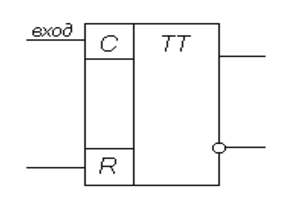
Рисунок 2 - Функциональная схема УПД
При подаче на R-вход сигнала триггер приходит в нулевое исходное состояние, на прямом выходе появляется сигнал логического 0. При последовательной подаче на вход С элементов двоичного кода выходной сигнал будет изменяться только при поступлении на вход символа 1 и не будет изменяться при поступлении символа 0. Кроме того, при поступлении двух единиц выходной сигнал снова будет равен 0. Это означает, что если в комбинации двоичного кода число единиц чётное, то по окончании их предъявления на выходе будет 0, который представляет собой контрольный разряд кода с проверкой на чётность. Этот контрольный разряд необходимо добавить к информационной комбинации двоичного кода.
Код с проверкой на нечётность формируется точно так же, для этого используется инверсный выход триггера.
Устройство масштабирования преобразует номер отсчёта АЦП в значение телеизмеряемой величины в технических единицах её измерения.
Масштабирующее устройство характеризуется коэффициентом передачи m. При использовании ПЛК это устройство реализуется введением масштабирующего элемента, коэффициент передачи которого подлежит расчёту в процессе проектирования цифровой системы телемеханики. Генератор тактовых импульсов служит для выработки тактовых сигналов. Данный генератор построен на основе логических элементов (рис. 3) с положительной обратной связью на конденсаторе C, которая охватывает элементы DD1.1 и DD1.2. Элемент DD1.1 введён в линейный усилительный режим с помощью резистора R отрицательной обратной связи. Элемент DD1.3 применяется здесь как буферный. Генерируемая частота определяется величинами C и R.
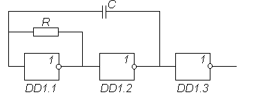
Рисунок 3 - Функциональная схема генераторов тактовых импульсов
Сигналы в телемеханике их анализ и характеристика
Сигналы в телемеханике их анализ и характеристика
В телемеханических системах на расстояние передается информация. Материальными носителями информации являются сигналы. В качестве сигналов выступают импульсы тока в линиях связи или радиосигналы. Импульсы тока несут информацию вследствие того, что обладают различными качествами (признаками).
Для организации вторичных каналов применяется специальная аппаратура уплотнения, обеспечивающая максимальную скорость передачи информации по одному каналу (50 ÷ 75) Бод. Она построена по известным способам разделения сигналов – временному, частотному или частотно-временному.
Разделение сигналов – обеспечение независимой передачи и приема многих сигналов по одной линии связи или в одной полосе частот, при которой сигналы сохраняют свои свойства и не искажают друг друга.
Существуют следующие типы разделения сигналов:
– временное;
– частотное;
– частотно-временное.
Временное разделение сигналов заключается в том, что каждому из n сигналов, которые должны быть переданы, линия связи предоставляется поочередно. Сначала за промежуток времени t1 передается сигнал 1, за промежуток t2 – сигнал 2 и т.д. (рис. 4). При временном разделении или временном уплотнении сигналов каждый сигнал занимает свой временной интервал, не занятый другими сигналами. Время, которое отводится для передачи всех сигналов, называется циклом.
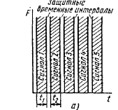
Рисунок 4 - Частотно-временная характеристика временного разделения сигналов
Структурная схема телемеханической системы с временным разделением сигналов представлена на рис.5
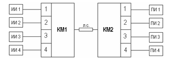
Рисунок 5 - Структурная схема телемеханической системы
с временным разделением сигналов:
ИИ1, …ИИ4 – источники информации; КМ1, КМ2 – коммутаторы;
ПИ1, …ПИ4 – приёмники информации
В современной реализации этой схемы могут быть применены: в качестве КМ1 – мультиплексор, в качестве КМ2 – демультиплексор, у которых соответственно выход и вход подключены к линии связи.
Коммутаторы КМ1 и КМ2 работают синхронно и синфазно, они находятся на одних и тех же позициях и переключаются одновременно.
Когда они находятся на первой позиции, то первый источник информации ИИ1 через первую позицию коммутатора КМ1 и его выход подключен к линии связи. Второй конец линии связи подключён через вход коммутатора КМ2 и его первую позицию к приёмнику информации ПИ1. Таким образом, на первой позиции коммутаторов по линии связи передаётся информация от ИИ1 к ПИ1.
Частотное разделение сигналов заключается в том, что для каждого из «п» сигналов, подлежащих передаче, выделяется своя полоса частот: для сигнала №1 – ∆F1, для сигнала №2 – ∆F2 и так далее (рис.6). Это значит, что при частотном разделении (частотном уплотнении) каждый сигнал занимает свой частотный интервал, не занятый другими сигналами.
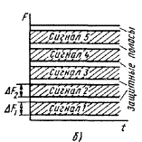
Рисунок 6 - Частотно-временная характеристика частотного разделения сигналов
Структурная схема системы телеуправления с частотным разделением сигналов на рис.7.
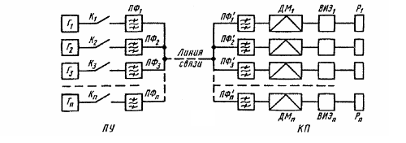
Рисунок 7 - Структурная схема системы телеуправленияс частотным разделением сигналов. Г1, ..., Гn – генераторы гармонических колебаний; К1, …, Кn – ключи;ПФ1, …, ПФп – полосовые фильтры; ДМ1, …, ДМn – демодуляторы;ИЭ1, …, ВИЭn – выходные исполнительные элементы; Р1, …, Рn – электромеханические реле
На приемной стороне (КП) каждый из посланных сигналов выделяется сначала полосовым фильтром, настроенным на данную частоту, с него поступает на соответствующий демодулятор ДМ, после чего эта команда поступает на выходной исполнительный элемент , который в свою очередь включает «своё» электромеханическое реле P.
Для включения реле P1 нужно замкнуть ключом К1 цепь генератора Г1, который посылает в линию связи частоту f1. На КП этот сигнал проходит только через фильтр и после выпрямления включает реле Р1.
Аналогично ключом К2 вклю¬чается реле P2 и т.д., причём по линии связи можно одновременно передавать несколько сигналов и каждый сигнал будет принят только своим получателем информации. За время, равное длительности одного сигнала, могут быть переданы сразу все или несколько сигналов.
Частотно-временное разделение сигналов заключается в том, что каждая позиция временного разделения уплотняется несколькими частотными каналами. Схема частотно-временного разделения сигналов сочетает схему временного разделения (см.рис. 5) и схему частотного разделения (см.рис. 7).
Частотно-временное разделение является производным от частотного и временного разделений, поэтому ему присущи достоинства и недостатки частотного и временного разделения.
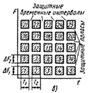
Рисунок 8 - Частотно-временная характеристика частотно-временного разделения сигналов
Ключевыми критериями при выборе системы телемеханики являются функциональная полнота, надежность работы оборудования и программного обеспечения, совокупная стоимость владения (цена системы и ее обслуживания). Важной характеристикой функциональных возможностей системы телемеханики является спектр поддерживаемых ею протоколов обмена данными. В Советском Союзе, а затем и в России получили распространение такие протоколы телемеханики, как АИСТ (RPT), ТМ-512, ГРАНИТ, ТМ-800А, КОМПАС, УТК-1, УТМ-7. Некоторые производители систем телемеханики поддержку этих национальных протоколов позиционируют как неоспоримое преимущество, что в наши дни уже не совсем верно. Не обсуждая технические преимущества и недостатки данных протоколов, отметим, что они не отвечают принципам открытости и стандартизации интерфейсов. Гораздо более перспективными в этом отношении являются протоколы, принятые в качестве международных стандартов: семейство МЭК 60870-5, МЭК 61850, МЭК 60870-6. Их применение в системах телеметрии гарантирует аппаратную и программную совместимость компонентов всех крупных производителей.
Виды селекции
При телемеханическом управлении и контроле основной является задача выбора объекта управления. Селекция - это метод выбора объекта из всего множества объектов, подлежащих управлению. Виды селекции различаются видом сигнала и видом разделения сигналов.
Сигналы подразделяют на одноэлементные и многоэлементные. В одноэлементном сигнале сообщение несет один импульс тока, в многоэлементном сигнале – все импульсы тока. Например, для того, чтобы определить сообщение, которое несет трехэлементный сигнал, необходимо знать качество каждого из трех импульсов. Выделяют также линейное и временное разделение сигналов. При линейном разделении (рис. 9,а) импульсы тока передаются одновременно каждый по своему каналу (физический провод, частотный канал и др.). При временном разделении импульсы тока передаются последовательно во времени (рис. 9,б).
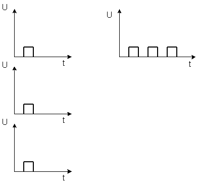
Рисунок 9 - Виды разделения сигналов
Сочетания указанных двух признаков дают четыре вида селекции: разделительная, качественно-комбинационная, распределительная и кодовая. Виды селекции характеризуются информационной емкостью N и временем передачи сообщения (быстродействием) Т. Свойства селекции тем лучше, чем больше N и меньше T.
Разделительная селекция – это линейное разделение одноэлементных сигналов. Для разделительной селекции N = k*n, T = tпр, где k – число качеств импульсов тока, n – число прямых проводов, tпр - время притяжения реле.
Достоинством разделительной селекции являются минимальное время передачи сообщений и возможность независимой и одновременной передачи приказов различным объектам, а минусами – малая емкость и многопроводность (многоканальность). Предположим, надо передать N = 100 сообщений. Тогда, если k = 2, то n = 50. Чтобы увеличить емкость системы применяется многоэлементный сигнал.
Качественно-комбинационная селекция – линейное разделение многоэлементных сигналов. Применение многоэлементного сигнала увеличивает емкость системы: N = kn, T = tпр.
Недостатком качественно-комбинационной селекции является многопроводность. Этот недостаток вообще присущ линейному разделению сигналов. Чтобы его исключить, надо применять временное разделение сигналов. При этом число каналов связи уменьшается в n раз (требуется всего один канал связи), но и в n раз увеличивается время передачи сообщений.
Распределительная селекция – это временное разделение одноэлементных сигналов. Для того чтобы осуществить временное разделение на ПУ и КП устанавливаются специальные устройства распределители. Аппаратура распределителей разнообразна, она может быть построена на основе реле, транзисторах, магнитных элементах. Распределители должны работать синхронно и синфазно.
Емкость распределительной селекции N = k*n, где n – число позиций распределителя. Время передачи сообщений переменное, поскольку приказы объектам передаются последовательно один за другим, при этом Tmax=tср*n и Tmin=tср, где tср - среднее время нахождения распределителя на одной позиции.
Достоинством распределительной селекции является малопроводность, а недостатками – увеличение времени передачи сообщений, усложнение аппаратуры из-за наличия распределителей, а также небольшая емкость.
Чтобы увеличить емкость применяют многоэлементный сигнал.
Кодовая селекция – временное разделение многоэлементных сигналов. Для кодовой селекции N = kn, T = tср*n. Кодовая селекция имеет наибольшую емкость при наименьшем числе каналов связи. Поэтому это лучший вид селекции, который наиболее часто используется.
Иногда в системах телемеханики одновременно используют кодовую и распределительную селекции. Кодово-распределительная селекция используется, если управляемые объекты расположены отдельными группами на большом расстоянии друг от друга. Так расположены объекты (стрелки и светофоры) промежуточных станций на железнодорожном участке. Поэтому кодово-распределительная селекция используется в диспетчерской централизации. Задача выбора управляемого объекта в этом случае делится на две: выбор группы (станции) и объекта в данной группе.
Достоинством кодово-распределительной селекции является возможность с помощью одной команды телеуправления передать приказы нескольким объектам в одной группе.
Способы соединения датчиков
Существуют разнообразные способы соединения датчиков: сквозное, шинное, звездообразное.
Сквозное соединение датчиков (релейное). Пропускаются через себя провода, опрашиваются вызовом (рис. 10). Используются по принципу: любой сработал — тревога. Подразумевается возможность модуляции сигнала и адресации. По приему адреса включает к себе питание. Получается, что в одно время работает только один датчик, потом он опять «засыпает» и потребляет небольшой ток — единицы микроампер. Это позволяет увеличить ресурс работы при аккумуляторном питании.
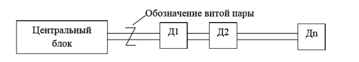
Рисунок 10 - Схема сквозного соединения датчиков
Шинное соединение (интеллектуальное). Срабатывание — запись информации по адресу. Наиболее часто используемые соединения: 2- и 4-проводные (рис. 11). Если датчики близко расположены друг к другу, то лучше использовать параллельный интерфейс. Современное решение вопроса — прокладка оптоволоконного кабеля
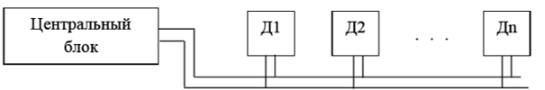
Рисунок 11 - Схема шинного соединения датчиков
Звезда. Применяется для определенных типов датчиков. Такие датчики не имеют своего адреса (например, терморезистивные). При большом количестве датчиков затрачиваются большие ресурсы.

Рисунок 12 - Схема соединения датчиков типа «звезда»
Направления развития датчиков и измерительных устройств
Направления развития датчиков и измерительных устройств
Перечислим основные перспективные направления развития датчиков и измерительных устройств: – модульное исполнение, в котором чувствительные преобразователи совмещены с цифровыми преобразователями; микроконтроллерное управление; – измерительные преобразователи выполняются по 2-проводной схеме включения, в том числе датчики, которые получили питание от источника сигнала; – нормально-пассивные измерительные преобразователи, которые работают по запросу, как бы находятся в «спящем» режиме и экономят ресурсы; – электронно-оптические измерительные преобразователи, не требующие питания в точке измерения (за исключением агрессивной среды, в которую нельзя подвести питание), на основе волоконно-оптической линии связи (ВОЛС).
Передача данных телесигнализации.
Передача данных ТС во всех типах протоколов обмена производится байтами. В протоколе ГОСТ Р МЭК 870-5-101 и ГОСТ Р МЭК 60870-5-104-2004 возможна передача данных ТС побитно. Каждый из восьми бит байта ТС, начиная с нулевого, отображает состояние соответствующего входа ТС. Разомкнутое состояние датчика соответствует значению «0», а замкнутое – «1». В случаях, когда количество входов ТС в устройстве или комплексе не кратно 8, в неиспользуемых битах передается значение «0».
Системы передачи данных
Современный подход к организации систем передачи данных (СПД) предполагает использование магистральных каналов связи с уплотнением и адресацией. Информация поступает с объекта управления по параллельной многоканальной системе, включающей измерительные преобразователи (ИП), преобразователи сигнал/код (ПрСК).
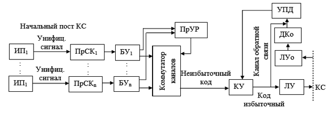
Рисунок 13 - Функциональная схема системы передачи данных для разнесенных объектов (пост канала связи): ИП — измерительный преобразователь; ПрСК — преобразователь «сигнал-код» (первичный преобразователь); БУ — буферное устройство, хранит информацию, пока она не будет считана коммутатором каналов; ПрУР — программное распределительное устройство для управления БУ и коммутатором каналов КК; КУ — кодирующее устройство, добавляет избыточное кодирование; ЛУ — линейное устройство; ЛУо — ЛУ обратного канала связи; ДКо — декодер обратного канала связи; УПД — устройство проверки, определяющее достоверность информации
Задача СПД заключается в необходимом форматировании поступающей информации для дальнейшей передачи в общий канал связи КС. Преобразования информации в СПД требуют времени и вычислительных ресурсов, поэтому необходимо буферное устройство БУ для временного хранения информации. Собственно преобразование в последовательный поток данных осуществляется коммутатором каналов КК. Кодирующее устройство КУ обеспечивает формирование битов служебного и избыточного кода по протоколу передачи канала связи. Современные протоколы оперируют пакетами данных.
Каждый пакет содержит заголовок, данные и окончание. Заголовок содержит адресную часть, а окончание формируется с избыточным кодом для возможности проверки качества передачи. Протоколы предусматривают передачу коротких служебных пакетов для подтверждения передачи. Таким образом, СПД получает информацию о состоянии канала связи и может корректировать или повторять передачу пакетов. Для этого используется цепочка устройств обратной связи ЛУО — ДКО — УПД.
Передача данных телеизмерений.
Передача телеизмерений в протоколах ГОСТ Р МЭК 870-5-101, ГОСТ Р МЭК 60870-5-104-2004, FT2 «Телеканал» и FT1.2 «Телеканал» для всех диапазонов входных сигналов производится в 16-разрядном формате. 12-разрядное значение ТИ помещается в младшую часть 16-разрядной ячейки. Старшим четырем разрядам присваивается значение «0».
Для протоколов «Гранит», «РПТ-80», «ТМ-512», «МКТ-2» и «МКТ-3» предусмотрена 8-разрядная передача значений ТИ. Для предотвращения дополнительного снижения точности передачи ТИ в устройствах производится масштабирование значений в зависимости от типа подключаемых датчиков и измерительных преобразователей: 0…5 мА, -5…+5 мА и 4…20 мА. Масштабирование обеспечивает использование всех 255 или только 250 квантов 8-разрядного значения ТИ для датчиков любого диапазона.
Передача команд телеуправления
Процесс передачи команд телеуправления не имеет дополнительных особенностей. Номера каналов телеуправления во всех модификациях комплексов и устройств идут последовательно, начиная с канала 1. В том же порядке они представлены в группах и объектах протоколов.
В случае передачи команды в несуществующий канал ТУ происходит предусмотренная протоколом отмена действия команды, сопровождающаяся соответствующей квитанцией, или передача сообщения о неисправности канала.
Передача служебной информации.
Объем служебной информации комплексов базовых модификаций составляет от 32 до 72 байт. Первые 32 байта занимает информация ведущего устройства, а далее, по порядку, блоками по 8 байт, размещается информация от ведомых устройств.
GPS (Global Positioning System) — это спутниковая навигационная система, позволяющая с точностью до 100 м определить местоположение объекта: его широту, долготу, высоту над уровнем моря, а также направление и скорость его движения. Кроме того, с помощью GPS можно определить время с точностью до 1 нс. GPS состоит из работающих в единой сети 30 спутников, находящихся на 6 орбитах высотой около 20 000 км над поверхностью Земли. Спутники постоянно движутся со скоростью около 3 км/с, совершая два полных оборота вокруг планеты менее чем за 24 часа. На борту каждого спутника установлены атомные часы, обеспечивающие точность 10–9 с, вычислительно-кодирующее устройство и передатчик мощностью 50 Вт. GPS-приёмник — это прибор, позволяющий определить местоположение в любой точке: на суше, на море и в околоземном пространстве. Исполнение GPS-приемников весьма разнообразно. В целом весь спектр моделей можно разделить на четыре большие группы: – портативные (индивидуального применения); – автомобильные; – морские; – авиационные.
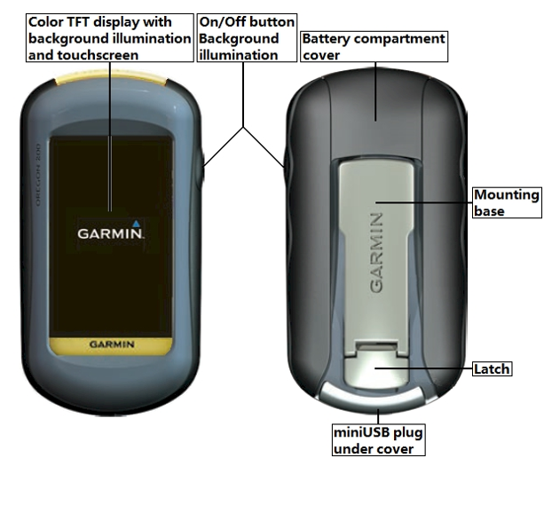